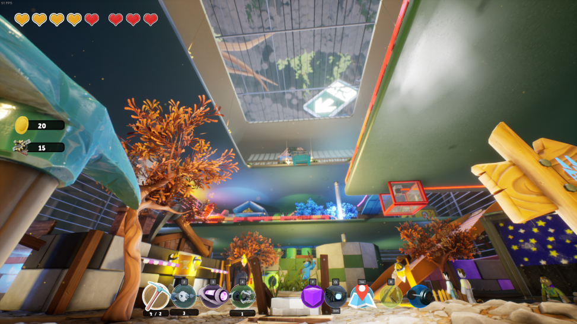
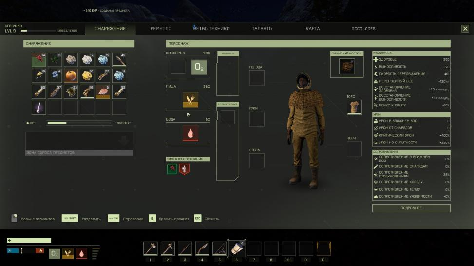
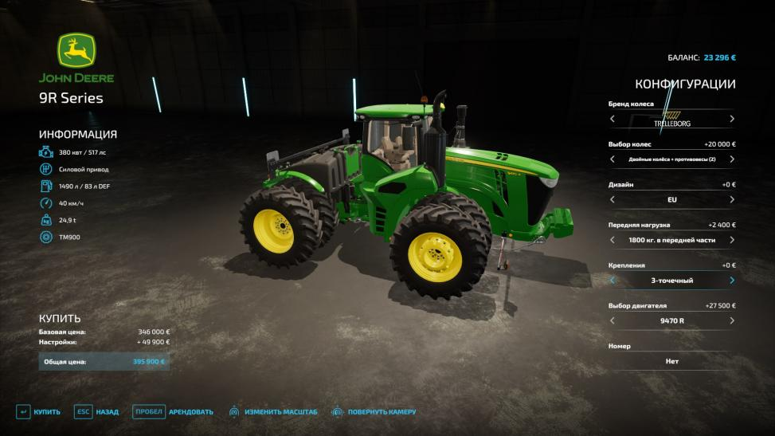

SUPRALAND SIX INCHES UNDER: ОБЗОР
Трёхмерная метроидвания Supraland, навеянная Portal и играми Nintendo, два года назад получила наивысшую оценку на StopGame. Она отлично сочетала пространственные головоломки с чувством свободы в небольшом открытом мире и была чуть ли не единственным подражателем Metroid Prime. Ещё тогда разработчик Давид Мюнних (David Munnich) говорил о сиквеле, но перед ним решил заняться DLC. Первое, Crash, вышло в 2020-м и мало отличалось от основной игры. А вот второе переросло в полноценный проект, который проходится быстрее DLC, но при этом, что странно, стоит дороже. И после прохождения становится ясно почему.
Водопроводчик против диктатуры
Сюжет Six Inches Under стартует в городе Красных и Синих после запуска ракеты из Supraland Crash. Из-за того, что люди начинают убирать площадку, в которой происходит действие игры, жители города вынуждены прятаться в подземном убежище. Главный герой теперь не принц, а обычный Синий-водопроводчик, которому поручают починить механизм двери. Но в процессе он проваливается ещё глубже под землю и начинает искать обратный путь.
История в новой игре не так схематична, как в Supraland, и случайных пасхалок, раскиданных по карте, стало сильно меньше. Единичные оммажи вроде Уолтера Уайта или трупов культовых персонажей почти не встречаются, зато те, что есть, выглядят более осмысленно. Например, одна из ключевых головоломок — это огромная отсылка к «Миссия: Невыполнима». А за развитием сюжета в местном тоталитарном городе, где диктатор качает деньги по трубам прямо из домов, следить проще и интереснее, чем за разрозненными зарисовками из оригинала.
ICARUS: ОБЗОР
Дин Холл (Dean Hall) — фигура в современной игровой индустрии весьма неоднозначная. Создатель великой модификации для ArmA II под названием DayZ так и не смог довести её до ума в качестве самостоятельного проекта, оставив своё детище другим разработчикам. Сам же бывший новозеландский военный, а ныне гейм-дизайнер решил творить без оглядки на крупных издателей и в 2014 году основал собственную студию RocketWerkz, которая должна была, как гласит лозунг на странице в Twitter, «делать клёвые игры» (We make cool games).
За новыми проектами не заржавело, а вот с «клёвостью» за семь лет существования студии пока есть проблемы: космическая MMO-песочница Ion отменена, VR-дилогия Out of Ammo не смогла запомниться чем-то выдающимся, навеянный Space Station 13 симулятор межпланетного колониста Stationeers до сих пор барахтается в Steam Early Access и вряд ли станет конкурентом для своего прародителя в плане популярности, а железнодорожный тайкун Art of the Rail ещё даже не вышел.
Зато 4 декабря появился «выживач» Icarus — не обошлось без переносов, зато сразу в релизной версии, безо всяких ранних доступов (за вычетом короткого бета-теста для предзаказавших).
Золотая лихорадка
Как вы заметили, в RocketWerkz любят космонавтов — не зря же именно они становятся главными героями уже третьего проекта (если считать отменённую Ion) этой студии. Идея использовать процесс освоения чужой планеты в качестве антуража далеко не нова для жанра: кому, как не колонизаторам, заниматься борьбой с окружающей средой, прилагая все усилия, чтобы выжить?
В далёком будущем планета Икар стала символом самонадеянности человечества — попытка терраформирования завершилась неудачей, а люди, вместо того чтобы получить второй дом, близнеца Земли, сделали из этого мира весьма негостеприимное место. Казалось бы, с кем не бывает: можно оставить Икар в памяти как символ тщетности попыток переиграть саму природу и двигаться на поиски иных миров, но всё меняет обнаружение весьма ценной экзоматерии на поверхности планеты.
Суровые природные условия теперь не такая уж сильная помеха — жить здесь вряд ли кто-то захочет, зато нет отбоя от желающих заработать на добыче драгоценных ресурсов. В истории человечества хватает примеров подобного — вспомнить хотя бы Аляску времён американской золотой лихорадки. Так и Икар вскоре становится подобием Клондайка — на планете появляются старатели, рискующие здоровьем и жизнью ради экзоматерии, сулящей баснословную прибыль.
FARMING SIMULATOR 22: ОБЗОР
В прошлом десятилетии в индустрии оформился новый жанр — симулятор рабочей профессии: строителя, грузчика, водителя автобуса, шахтёра. В отличие от всем знакомых авиа- и автосимуляторов, эти игры не ставят во главу угла соревнование или боевые действия, не стараются удивить реализмом или высоким уровнем графики — это довольно специфическое развлечение, сконцентрированное на показе особенностей профессии и отлично подходящее для тех, кто хочет попробовать себя в роли, например, лесоруба, не вставая с уютного кресла.
акончилось всё совсем абсурдными примерами, высмеивающих однообразие и рутину, присущие подобным проектам, — вспомнить хотя бы симулятор камня Rock Simulator. Впрочем, почему закончилось? Жанр отлично себя чувствует и поныне, а выход новой Farming Simulator от Giants Software — лишнее тому подтверждение. Что же такого в симуляторе фермера, если в Steam у него игроков больше, чем у свежей Battlefield?
Хорошо в деревне летом
Чем вообще может заниматься отдельно взятый современный фермер? Всем, что имеет отношение к производству сельскохозяйственной продукции. Благодаря научно-техническому прогрессу работа на селе теперь может быть настолько хорошо автоматизирована, что справиться даже с хозяйством немалых размеров под силу небольшому коллективу — при должной компетенции, само собой.
FS22 даёт возможность попробовать все аспекты фермерской жизни — от вспашки полей до доставки продукции на продажу. Если брать классический режим, без мультиплеера и модификаций (с которыми серия давно и успешно дружит), то игрок волен заниматься чем угодно, из ограничений — лишь стартовый капитал. Впрочем, возможности аренды техники и кредитование помогут справиться и с этим неудобством: можно делать что душа пожелает даже на высокой сложности.
